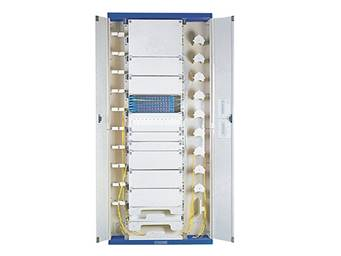

Fiber Optic Distribution Frame GPX910-YA Series

ODF is widely used in optical communication network, specially applied to local side and distribution in Optical Access Network (OAN).It has the function of cable access, fixing, protection, storage, and management of fiber optic cable and the storage and management of fiber patch coed. PLC splitter module and Wavelength Division Multiplexing (WDM) module can be installed according to the requirements.
Features
* 19' standard module
* Easy for cable installation
* 72-ports distribution unit box with built in splice tray
* Plenty room for patch chord storage, high capacity, high density, convenient for combination and dilatation
* Full enclosed structure with hidden pigtails
* Good appearance and dustproof performance
* PLC splitter module and attenuators can added-up
Ordering Guide
NO. |
Type |
Dimension (mm) H*W*D |
Max Capacity (Fiber count) |
1 |
GPX910-Y1a |
2600*840*300 |
720 ports |
2 |
GPX910-Y2a |
2200*840*300 |
576 ports |
3 |
GPX910-Y3a |
2000*840*300 |
432 ports |